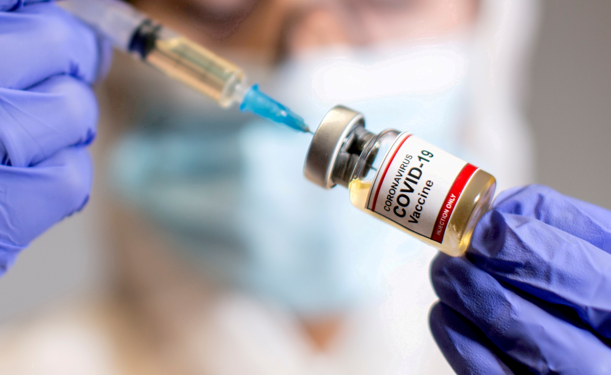

As of now, researchers know that the coronavirus is spread through droplets and virus particles released into the air when an infected person breathes, talks, laughs, sings, coughs or sneezes. Larger droplets may fall to the ground in a few seconds, but tiny infectious particles can linger in the air and accumulate in indoor places, especially where many people are gathered and there is poor ventilation. This is why mask-wearing, hand hygiene and physical distancing are essential to preventing COVID-19.
The first case of COVID-19 was reported Dec. 1, 2019, and the cause was a then-new coronavirus later named SARS-CoV-2. SARS-CoV-2 may have originated in an animal and changed (mutated) so it could cause illness in humans. In the past, several infectious disease outbreaks have been traced to viruses originating in birds, pigs, bats and other animals that mutated to become dangerous to humans. Research continues, and more study may reveal how and why the coronavirus evolved to cause pandemic disease.
Symptoms show up in people within two to 14 days of exposure to the virus. A person infected with the coronavirus is contagious to others for up to two days before symptoms appear, and they remain contagious to others for 10 to 20 days, depending upon their immune system and the severity of their illness.
Since the start of the COVID-19 outbreak, WHO has worked with countries and areas in the Western Pacific Region on public health measures to slow or stop the spread of the virus.
Safe and effective vaccines are an important tool, in combination with other measures, to protect people against COVID-19, save lives and reduce widescale social disruption.
Countries and areas in the Western Pacific Region have already completed regulatory approval and started introducing one or more COVID-19 vaccines.

Through the COVAX Global Vaccine Facility and other mechanisms, WHO and partners are working with governments to facilitate equitable access to and distribution of an initial allocation of vaccine as quickly as possible.
WHO recommends that initial vaccination should prioritize groups at highest risk of exposure to infection in each country, including health workers, older persons and those with other health issues. Once COVID-19 vaccines reach priority groups, countries should vaccinate other priority groups and the general population.
It is important to get vaccinated as soon as it's your turn and continue practicing other protective measures.